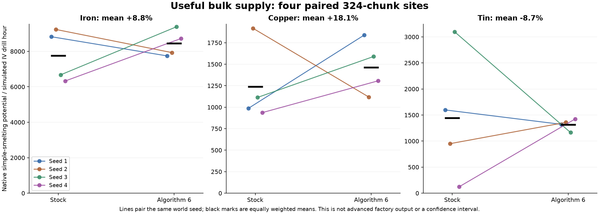
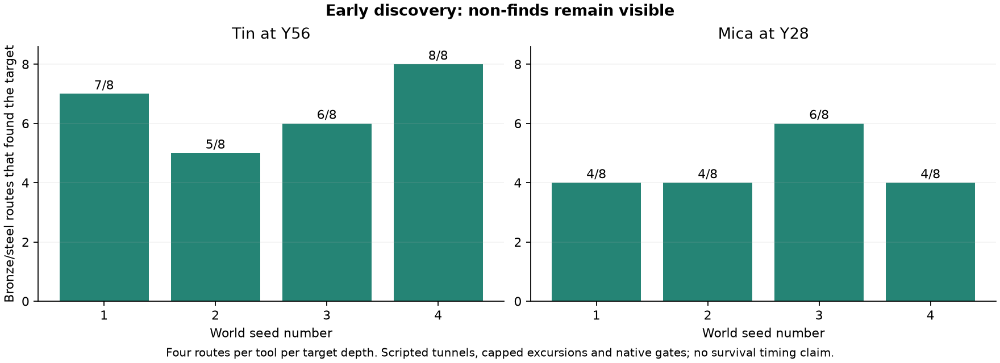

GTNH 2.9.0-RC-2 · algorithm 6 · bulk-20261010-v2 · experimental
Random discoveries.
Coherent deposits. Measured supply.
Ordinary finds, seams and rare industrial jackpots coexist. Native technology gates remain. This report records what was measured and what remains uncertain.
Original measured main artifact4b4e285f2e4b8a90edbb57aa33328fd64911a36a4ed451beb246ad67aefa6272Fresh worlds only. Existing saves must retain their matching algorithm and profile. Experimental public alpha; The public download is a namespace-only rebuild; see BUILD_VERIFICATION.md in the repository for its current hash and equivalence checks.
Bulk supply
Four native IV drills worked paired 324-chunk sites: two calibration seeds and two seeds held out before the v1 campaign. The v2 associated-mineral correction followed that campaign; these are not four untouched blind validation seeds. All custom drills completed with zero GT ore blocks left below controller Y100. Fixtures supplied power, fluid, pipes, maintenance and collection.

All three equally weighted mean rates must stay within 20% of stock under the provisional target. Individual-site changes are much larger; averaging does not guarantee identical progression on any seed. Three retained stock controls have native fixture class bytes identical to their candidate comparison. The oldest stock control records its QA hash but lacks a retained QA jar, so that byte-level comparison is unavailable.
Early discovery

Each bar includes misses. Bronze and steel are tested at native harvest permissions. The repaired/leveled native flint lifecycle and 28 starter harvest gates match the retained stock control; this synthetic fixture does not measure a complete survival start.
Real large finds
These are face-connected actual custom full-ore blocks, grouped across associated minerals inside each sampled drill area. Overlapping bodies can merge, while caves, rejected hosts and sample edges can split a planned deposit. They measure natural connected hauls, not individual named industrial deposits.
| Seed number | Largest connected group | Groups at least 500 blocks | Groups at least 1000 blocks |
|---|
| 1 | 3030 | 2 | 2 |
| 2 | 2173 | 2 | 2 |
| 3 | 2471 | 4 | 4 |
| 4 | 343 | 0 | 0 |
Actual native processing
Eight minerals passed washing, thermal centrifuging and maceration: 24 completed native MV stages. Primary outputs were manually handed to the next stage; water and rated MV power were supplied. Every stage consumed stored electricity during a four-tick unsupplied probe. Byproducts are reported as actual items, not silently counted as finished ingots. Batch times include fixture startup/collection granularity. Input/hour is 72000*batch input/batch ticks, a small-batch machine benchmark rather than a steady-state finished-metal forecast. Native processing capacity still requires parallel machines or upgrades; ore availability does not remove that engineering challenge.
Coverage and progression
1,848 native material-role fixtures, 256 materials, 38 eligible dimensions. 91,132 generated custom blocks audited with zero material/dimension/height violations. 250 materials appeared naturally in the finite sample; unseen materials: Andradite, Dolomite, Manganese, Trona, Vermiculite, Wollastonite.
Critical naturally observed counts: {'MysteriousCrystal': 161, 'Honeaite': 384, 'BArTiMaEuSNeK': 40}. Asteroids retain their own native channels; the empty Underdark catalog remains native. The End retains its native height exception.
Required content differences: 0. Audit covers 172 native machine maps / 186,892 recipes, 494 assembly-line recipes, 40 void tables and 10 Stargate recipes plus SpaceMiningData. 5 raw ordered hashes differ in maps also variable between stock restarts; complete normalized content is checked separately. Output priority/order and other auxiliary metadata are not claimed identical.
All 256 material identities passed native prospecting acceptance and packet round-trip. Powered asynchronous scan and rendered UI remain unverified; cached vein labels are a separate compatibility concern.
Planetary supply: retained evidence and open outliers
Algorithm 6 preserves algorithm-5 planetary placement plans. The table below retains that earlier two-site Maahes drill evidence, not newly ticked algorithm-6 planet drills. New algorithm-6 natural planet coverage is audited above. These outliers are why this release cannot promise unchanged endgame supply or progression hours. Counts are actual native output items, not finished ingots; a zero-stock site makes relative changes especially sensitive.
Model and limits
In Tin-primary layers, compact-find probability p sums q*(0.5+0.5*t): local layer probability q and native Tin-role probability t. Expected ordinary loss is 0.94*p*4; each rare 1/3000 industrial target receives 11280*p extra planned blocks. This balances expected planned mass before clipping, caves, host rejection and overlap. It does not guarantee actual tonnage. Iron/copper/tin factors 1.8/2.4/0.45 alter only large Overworld bodies under positive constrained allocation.
- Four paired sites: two calibration seeds and two seeds held out before v1. The v2 associated-mineral fix followed observing v1 outcomes; these are not four untouched blind validation seeds. No population-wide guarantee or confidence interval.
- Furnace lookup on collected native drill drops gives simple-smelting potential, not a running advanced factory.
- Fixtures supply electricity, fluid, pipes, maintenance and output collection; hours are machine ticks at 20TPS.
- Scripted branch routes omit hunger, combat, travel and lighting. Censored misses are retained.
- The earlier algorithm5 maximum discrepancy of77.1percent came from two calibration sites. Comparing it with this four-site result is descriptive, not a matched four-site improvement claim.
- Factory acceptance is a provisional common-resource check; it does not prove all-resource or two-Stargate progression parity.
- Planetary placement plans retain algorithm5. Previous two Maahes site pairs retain rare-material output outliers; no universal planet balance claim.
- Catalog fixtures test every active material role, not a natural occurrence guarantee for every material in finite terrain. Asteroid channels and empty Underdark catalog remain native.
- Recipe content audit includes native quantities, NBT, behavior flags, assembly-line research, void tables, Stargate and SpaceMiningData. Native output ordering and other auxiliary metadata are outside parity.
- Prospecting identity/payload tests do not prove rendered scanner UI or cached vein-label accuracy.
- No complete survival playthrough or elapsed time to two Stargates has been measured.
Complete sanitized aggregate evidence · Reading guide